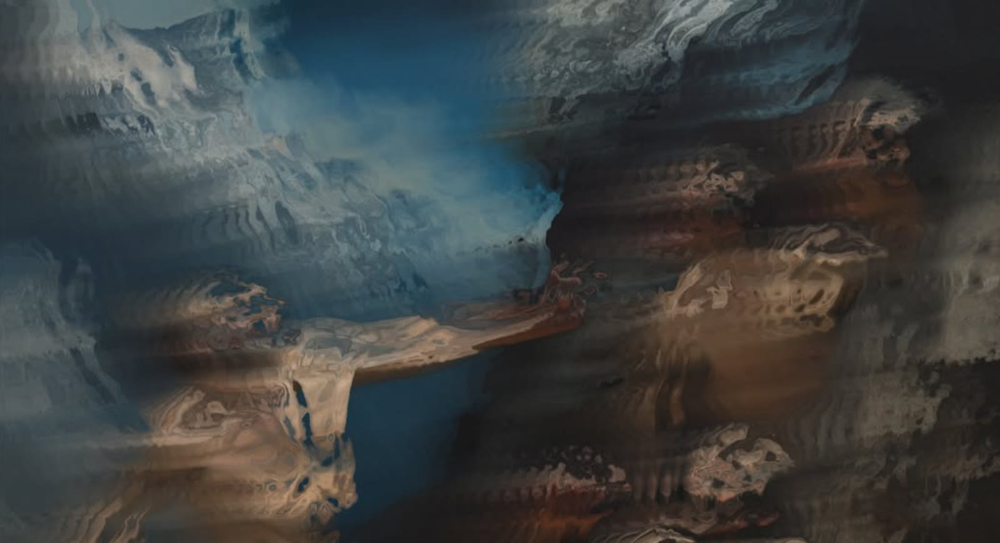
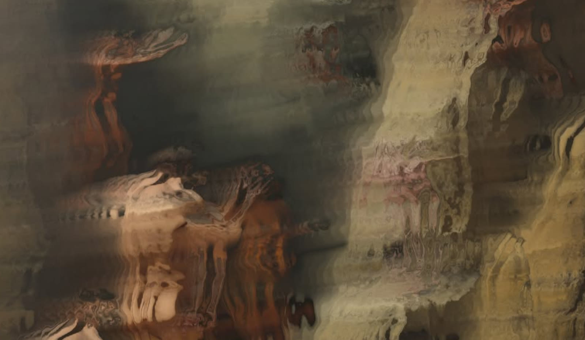
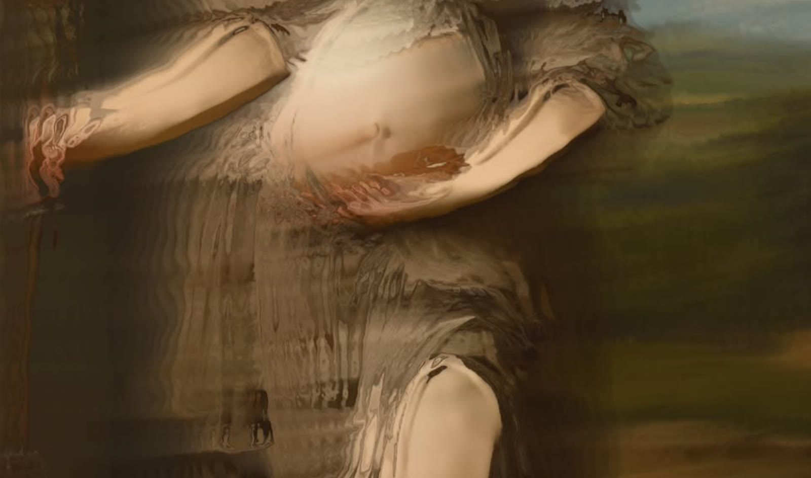

← Tutti i lavori
X6
X6 è una performance live A/V costruita attorno a una chitarra esafonica spazializzata: le sei corde, captate singolarmente, vengono elaborate ed espanse nello spazio dal live electronics, mentre i visual interattivi reagiscono in tempo reale al suono, trasformando la materia sonora in paesaggi visivi in continua metamorfosi.


